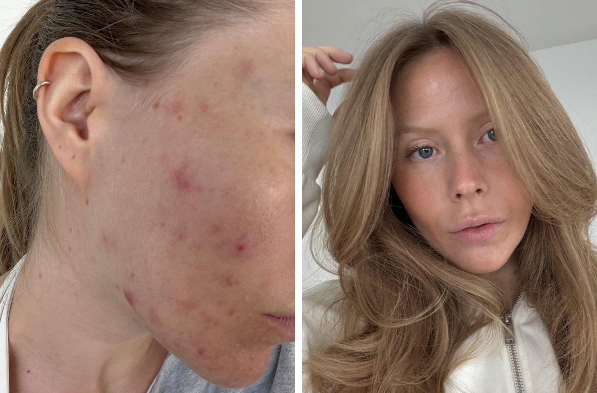
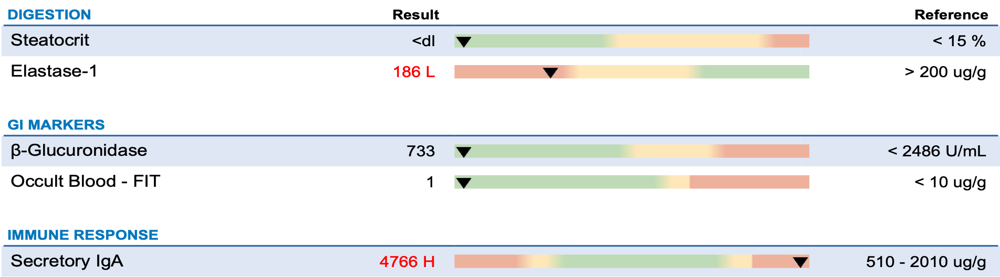

Acne: waar het vandaan komt
Mijn eigen acne, mijn uitslagen, en wat de studies per oorzaak zeggen.
Elke cyclus, net na mijn eisprong, komt mijn acne op. Hij blijft tot mijn menstruatie. De rest van de maand is mijn huid goed. Ik liet mijn bloed, mijn hormonen en mijn darm testen, en de oorzaak weet ik nog steeds niet. Wel weet ik nu hoe acne ontstaat, en wat er per oorzaak echt bekend is. Dat deel ik hier, met mijn eigen uitslagen en een check voor jouw acne.
Wat bijna niemand weet
Elk getal komt uit een studie, behalve het laatste. Dat is mijn eigen bloed.
81%
Acne zit voor een groot deel in je genen
In een studie bij 1.557 vrouwelijke tweelingparen kwam 81% van de verschillen in acne door erfelijkheid. Erfelijk betekent: de aanleg die je van je ouders meekrijgt. Dat helpt verklaren waarom de een acne krijgt van iets waar de ander niets van merkt.
Studie met 1.557 tweelingparen
44%
Bij bijna de helft speelt acne op vlak voor de menstruatie
Van 400 vrouwen met acne merkte 44% dat die vlak voor hun menstruatie opspeelt. Dan dalen oestrogeen en progesteron, twee hormonen uit je eierstokken. Houd daarom bij op welke dag van je cyclus je acne opkomt.
Vragenlijst bij 400 vrouwen
1 op 10
Vitamine B12 kan acne uitlokken
In een studie kreeg 1 van de 10 gezonde mensen binnen een week acne na extra B12. Bij 5 vrouwen verdween de acne 3 tot 6 weken nadat ze stopten met B12. Slik je B12 of krijg je injecties? Laat dan je waarde meten.
Kleine studies
32%
Magere melk hangt sterker samen met acne dan volle
In een overzicht van 14 studies met 78.529 mensen was de kans op acne 32% hoger bij magere melk, en 25% bij zuivel in het algemeen. Yoghurt en kaas lieten geen verband zien. Het zijn geen experimenten, dus of melk zelf acne geeft, weten we nog niet.
Overzicht van 14 studies
2,04 → 0,74
Mijn testosteron werd normaal, mijn acne bleef
Testosteron is een hormoon dat je talgklieren meer talg laat maken, het olieachtige laagje op je huid. In mei 2026 was het bij mij 2,04 nmol/L, boven de grens van het lab (1,67). In september was het 0,74, weer binnen het bereik. Mijn acne kwam gewoon elke cyclus terug. Een hoge waarde kan meespelen, maar verklaart lang niet altijd alles.
Mijn eigen data
The influence of genetics and environmental factors in the pathogenesis of acne: a twin study of acne in women.
Bataille V, Snieder H, MacGregor AJ, Sasieni P, Spector TD
J Invest Dermatol 2002 · PMID 12485434
The effect of the menstrual cycle on acne.
Stoll S, Shalita AR, Webster GF, Kaplan R, Danesh S et al.
J Am Acad Dermatol 2001 · PMID 11712049
Acneiform eruptions caused by vitamin B12: A report of five cases and review of the literature.
Veraldi S, Benardon S, Diani M, Barbareschi M
J Cosmet Dermatol 2018 · PMID 28594082
Vitamin B12 modulates the transcriptome of the skin microbiota in acne pathogenesis.
Kang D, Shi B, Erfe MC, Craft N, Li H
Sci Transl Med 2015 · PMID 26109103 · PMCID PMC6049814
Dairy Intake and Acne Vulgaris: A Systematic Review and Meta-Analysis of 78,529 Children, Adolescents, and Young Adults.
Juhl CR, Bergholdt HKM, Miller IM, Jemec GBE, Kanters JK et al.
Nutrients 2018 · PMID 30096883 · PMCID PMC6115795
Deel 1
Mijn acne, elke cyclus opnieuw
Wat ik liet testen, wat eruit kwam en wat ik nog niet weet.
Net na mijn eisprong begint het
Mijn acne volgt mijn cyclus. Je cyclus loopt van de eerste dag van je menstruatie tot de dag voor de volgende. Sinds juli 2026 houd ik in mijn dagboek bij op welke dag mijn acne opkomt.
- Tot mijn eisprong is mijn huid goed. Je eisprong is het moment dat je eierstok een eicel loslaat.
- Net na mijn eisprong, rond dag 17 tot 22, komt de acne op. Vooral langs mijn kaaklijn en op mijn kin, en 's avonds is het het ergst.
- Hij blijft tot mijn menstruatie en zakt daarna weer weg.

Mijn huid. Links tijdens een opvlamming, rechts op een goede dag. Ik heb nog steeds acne, het verschilt per week van mijn cyclus.
Niemand kon mij helpen
Omdat mijn acne zo precies met mijn cyclus meegaat, dacht ik lang dat het hormonaal was. En mijn acne was niet het enige wat elke cyclus terugkwam. Ik liet jarenlang alles testen: mijn bloed, mijn DNA, mijn hormonen, mijn darm. Ik ging naar het ziekenhuis en naar klinieken, tot in de Verenigde Staten. Bij elkaar gaf ik er meer dan €10.000 aan uit. Niemand kon mij helpen.
Mijn testosteron was te hoog, en daarna niet meer
In mei 2026 zag ik iets in mijn bloed: mijn testosteron was te hoog. Testosteron is een hormoon dat vrouwen ook maken, alleen minder dan mannen. Het laat je talgklieren meer talg maken, het olieachtige laagje op je huid. SHBG is een eiwit dat testosteron in je bloed vasthoudt. Hoe lager je SHBG, hoe meer testosteron er vrij is om iets te doen.
- Mei 2026: testosteron 2,04 nmol/L, boven de grens van 1,67. Mijn SHBG was 39,2: binnen het bereik, maar aan de lage kant.
- September 2026: testosteron 0,74, weer binnen het bereik. Mijn SHBG was gestegen naar 55,6.
- Mijn acne kwam elke cyclus gewoon terug.

Mijn bloeduitslag van mei 2026. De pijl staat bij testosteron: 2,04, boven het bereik van 0,29 tot 1,67.
Dat past bij wat de huisartsenrichtlijn zegt. Bij de meeste mensen met acne zijn de hormonen in het bloed gewoon normaal, omdat de huid testosteron zelf sneller omzet. Een normale uitslag sluit hormonen dus niet uit, en een hoge uitslag verklaart niet alles.
A Reappraisal of Testosterone's Binding in Circulation: Physiological and Clinical Implications.
Goldman AL, Bhasin S, Wu FCW, Krishna M, Matsumoto AM et al.
Endocr Rev 2017 · PMID 28673039 · PMCID PMC6287254
NHG-Standaard Acne
Nederlands Huisartsen Genootschap
Ook mijn darm liet ik testen
In februari 2026 deed ik de GI-MAP, een darmtest uit ontlasting uit de Verenigde Staten. Die meet hoe je spijsvertering werkt en hoe je darm reageert.
- Elastase, een enzym waarmee je alvleesklier eten afbreekt, was 186. De grens is 200, dus ik zat er net onder. Bij bijna de helft van de mensen bij wie een te lage waarde werd herhaald, was de tweede meting normaal.
- Secretoir IgA, een maat voor de afweer in je darmwand, was hoog: 4.766. Geen richtlijn gebruikt deze waarde om iets vast te stellen.
- Geen enkele studie koppelt deze twee waarden aan acne.

Mijn GI-MAP van februari 2026: elastase 186 (net onder de grens) en secretoir IgA 4.766 (hoog).
The investigation and management of pancreatic exocrine insufficiency: A retrospective cohort study.
Shandro BM, Ritehnia J, Chen J, Nagarajah R, Poullis A
Clin Med (Lond) 2020 · PMID 33199316 · PMCID PMC7687321
Waar ik nu sta
Ik heb nog steeds acne, en de oorzaak weet ik niet. Wat ik wel weet, komt uit mijn dagboek en mijn uitslagen.
- Bijna elke cyclus begint het net na mijn eisprong. In oktober 2026 kwam het weer op, vanaf de avond van dag 16.
- Ik laat mijn bloed opnieuw meten. Zo zag ik in september dat mijn testosteron weer normaal was, terwijl mijn acne bleef.
- Mijn huidroutine staat op mijn skincare-pagina.
- Wat ik onderweg leer, zet ik op deze pagina.
Je hoeft niet alles te testen wat ik heb getest. Begin bij je eigen patroon. De check hieronder laat zien waar je het eerst kunt kijken.
Deel 2
Wat speelt er bij jou?
Negen vragen, en je ziet waar je het eerst kunt kijken.
Jouw acne-check
Denk aan de afgelopen drie maanden. Kies per vraag nee, soms of vaak, en je ziet welk deel van deze pagina je het eerst leest.
Je acne komt elke maand terug in de tweede helft van je cyclus.
Je cyclus is onregelmatig: korter dan 21 of langer dan 35 dagen.
Je hebt meer haargroei op je kin, buik of borst dan je zou willen.
Je acne begon of werd erger na een nieuw hormoonspiraal, de prikpil of de minipil.
Je drinkt elke dag melk, vooral magere melk, of eiwitshakes met whey.
Je eet vaak snelle koolhydraten: wit brood, frisdrank, snoep.
Je slikt vitamine B12, een multivitamine met veel B12, of krijgt B12-injecties.
Je gebruikt zware crèmes, oliën of haarproducten die je gezicht raken.
Je draagt vaak een mondkapje, helm of telefoon tegen je wang, of je pulkt aan je huid.
Je herkent weinig van deze signalen. Meten laat zien of dat klopt.
Tik per vraag op een antwoord. Je antwoorden worden nergens opgeslagen.
Deze check stelt niets vast. Hij laat zien waar je het eerst kunt kijken. Heb je pijnlijke knobbels, littekens of acne die niet overgaat? Ga dan naar je huisarts.
Deel 3
Wat gebeurt er in je huid?
Vier stappen, en waar elke oorzaak inhaakt.
Van talg tot puistje
In je huid zitten duizenden haarzakjes, kleine buisjes waar een haartje uit groeit. Aan elk haarzakje zit een talgklier. Die maakt talg, een olieachtig laagje dat je huid soepel houdt en beschermt. Acne begint in dat haarzakje.
- Meer talg. De talgklier maakt meer talg dan normaal, vaak door hormonen.
- Verstopte porie. Huidcellen aan de binnenkant van het haarzakje laten niet goed los. Ze plakken met de talg samen tot een propje. Blijft het dicht, dan zie je een wit bultje (een witte mee-eter). Komt het propje open aan de lucht, dan kleurt het donker (een zwarte mee-eter).
- Bacteriën. In dat afgesloten, vette propje groeit de huidbacterie C. acnes goed. Die bacterie hoort gewoon op je huid te zitten.
- Ontsteking. Je afweer reageert op het propje en de bacteriën. Zo ontstaat een rode bult, een puistje met pus, of bij diepe ontsteking een pijnlijke knobbel.
Tik op een stap voor uitleg.
Vereenvoudigd schema van hoe een puistje ontstaat, en waar de oorzaken inhaken.
Bij mij is het een mix van stap 2 en stap 4: verstopte poriën en ontstoken bultjes. In het schema hierboven zie je bij welke stap elke oorzaak inhaakt. Of je acne krijgt, ligt voor een groot deel in je genen: in de tweelingstudie bovenaan was acne voor 81% erfelijk.
Acne vulgaris.
Williams HC, Dellavalle RP, Garner S
Lancet 2012 · PMID 21880356
The influence of genetics and environmental factors in the pathogenesis of acne: a twin study of acne in women.
Bataille V, Snieder H, MacGregor AJ, Sasieni P, Spector TD
J Invest Dermatol 2002 · PMID 12485434
NHG-Standaard Acne
Oorzaken, wanneer hormonen laten checken, en de behandeling
Deel 4
Komt het door je hormonen?
Testosteron, je cyclus, PCOS en de pil.
Testosteron maken vrouwen ook
Androgenen zijn hormonen die vaak 'mannelijk' heten. Vrouwen maken ze ook, in de eierstokken en de bijnieren. Testosteron is de bekendste.
- Testosteron reist via je bloed naar je huid. Het grootste deel zit daarbij vast aan een eiwit, SHBG. Alleen het losse, vrije testosteron kan iets doen.
- In de talgklier zet een enzym (5-alfa-reductase) testosteron om in DHT, een veel sterkere vorm.
- DHT laat de talgklier groeien en meer talg maken. Dat is stap 1 van acne.
De meeste mensen met acne hebben normale hormoonwaarden in hun bloed. Volgens de huisartsenrichtlijn werkt dat enzym in de huid bij acne vaak harder: je huid reageert sterker, ook als je bloed normaal is. In kleine groepen bij de specialist had wel de helft tot ruim 60% van de vrouwen minstens één verhoogde waarde, vaak vrij testosteron of DHEA-S (een androgeen uit de bijnier), met een lager SHBG. Bij mij bleef de acne ook toen mijn testosteron weer normaal was.
NHG-Standaard Acne
Oorzaken, wanneer hormonen laten checken, en de behandeling
A Reappraisal of Testosterone's Binding in Circulation: Physiological and Clinical Implications.
Goldman AL, Bhasin S, Wu FCW, Krishna M, Matsumoto AM et al.
Endocr Rev 2017 · PMID 28673039 · PMCID PMC6287254
Activity of the type 1 5 alpha-reductase exhibits regional differences in isolated sebaceous glands and whole skin.
Thiboutot D, Harris G, Iles V, Cimis G, Gilliland K et al.
J Invest Dermatol 1995 · PMID 7636302
Plasma androgens in women with acne vulgaris.
Lucky AW, McGuire J, Rosenfield RL, Lucky PA, Rich BH
J Invest Dermatol 1983 · PMID 6223099
Hyperandrogenemia in patients presenting with acne.
Slayden SM, Moran C, Sams WM Jr, Boots LR, Azziz R
Fertil Steril 2001 · PMID 11334899
Waarom het voor je menstruatie opspeelt
Van 400 vrouwen met acne merkte 44% dat die vlak voor hun menstruatie opspeelt. Dan dalen oestrogeen en progesteron. Hoe die daling precies tot acne leidt, weet nog niemand goed. Bij mij begint het al net na mijn eisprong, dus ruim voor die laatste dagen. Acne is ook bij volwassen vrouwen gewoon: in een vragenlijst had ongeveer de helft van de vrouwen in hun twintiger jaren er last van, en ruim een derde in hun dertiger jaren. Op mijn hormonen-pagina zie je hoe je hormonen in een maand bewegen.
The effect of the menstrual cycle on acne.
Stoll S, Shalita AR, Webster GF, Kaplan R, Danesh S et al.
J Am Acad Dermatol 2001 · PMID 11712049
The prevalence of acne in adults 20 years and older.
Collier CN, Harper JC, Cafardi JA, Cantrell WC, Wang W et al.
J Am Acad Dermatol 2008 · PMID 17945383
Establishment of detailed reference values for luteinizing hormone, follicle stimulating hormone, estradiol, and progesterone during different phases of the menstrual cycle on the Abbott ARCHITECT analyzer.
Stricker R, Eberhart R, Chevailler MC, Quinn FA, Bischof P et al.
Clin Chem Lab Med 2006 · PMID 16776638
Kan het PCOS zijn?
PCOS is een hormoonaandoening waarbij de eierstokken meer androgenen maken en de cyclus vaak onregelmatig is. Meer androgenen betekent meer talg, dus acne komt bij PCOS vaker voor: bij 43% van de vrouwen met PCOS, tegen 21% zonder. Andersom had in kleine studies 17 tot 37% van de vrouwen met acne PCOS. Heb je alleen acne, zonder bijvoorbeeld veel haargroei of een onregelmatige cyclus, dan is dat maar een zwak signaal voor verhoogde hormonen. Op mijn PCOS-pagina lees je hoe het werkt.
Prevalence of acne vulgaris among women with polycystic ovary syndrome: a systemic review and meta-analysis.
Ramezani Tehrani F, Behboudi-Gandevani S, Bidhendi Yarandi R, Saei Ghare Naz M, Carmina E
Gynecol Endocrinol 2021 · PMID 33355023
Ovarian morphology and prevalence of polycystic ovary syndrome in reproductive aged women with or without mild acne.
Kelekci KH, Kelekci S, Incki K, Ozdemir O, Yilmaz B
Int J Dermatol 2010 · PMID 20618496
Recommendations From the 2023 International Evidence-based Guideline for the Assessment and Management of Polycystic Ovary Syndrome.
Teede HJ, Tay CT, Laven JJE, Dokras A, Moran LJ et al.
J Clin Endocrinol Metab 2023 · PMID 37580314 · PMCID PMC10505534
De pil, het spiraaltje en je huid
Hormonale anticonceptie verandert je eigen hormonen, en daarmee vaak ook je huid.
- De gecombineerde pil bevat oestrogeen en een progestageen (een nagemaakt progesteron). Het oestrogeen laat je lever meer SHBG maken, dat meer testosteron vasthoudt, en de pil remt je eierstokken. Minder vrij testosteron betekent minder talg.
- Methodes met alleen een progestageen, zoals het implantaat, de prikpil en het hormoonspiraal, missen dat oestrogeen. Sommige progestagenen lijken bovendien een beetje op androgenen.
- Stop je met de pil, dan daalt je SHBG weer en maken je eierstokken weer hun eigen androgenen.
In 31 onderzoeken verminderde elke gecombineerde pil acne vergeleken met een placebo. Met een hormoonspiraal kreeg 15% van de vrouwen acne. Acne na het stoppen met de pil is nooit goed onderzocht, maar door de stappen hierboven is het logisch dat je huid dan kan veranderen. Wil je iets aan je anticonceptie veranderen, bespreek het dan met je huisarts.
Combined oral contraceptive pills for treatment of acne.
Arowojolu AO, Gallo MF, Lopez LM, Grimes DA
Cochrane Database Syst Rev 2012 · PMID 22786490 · PMCID PMC11437354
Hormonal Contraceptives and Acne: A Retrospective Analysis of 2147 Patients.
Lortscher D, Admani S, Satur N, Eichenfield LF
J Drugs Dermatol 2016 · PMID 27272072
Incidence of Acne in Women Using the Levonorgestrel-Releasing Intrauterine Device: A Systematic Review and Meta-Analysis.
de Oliveira ECF, de Sousa FTR, Lemos FAO, Vasconcelos CP, Rocha ALL
BJOG 2026 · PMID 41424156
Recommendations From the 2023 International Evidence-based Guideline for the Assessment and Management of Polycystic Ovary Syndrome.
Teede HJ, Tay CT, Laven JJE, Dokras A, Moran LJ et al.
J Clin Endocrinol Metab 2023 · PMID 37580314 · PMCID PMC10505534
Klopt het verhaal over oestrogeendominantie?
'Oestrogeendominantie' betekent: te veel oestrogeen ten opzichte van progesteron. Het wordt vaak genoemd als oorzaak van acne, net als te veel of te weinig aromatase, een enzym dat androgenen omzet in oestrogenen. Geen onderzoek bij mensen laat dat zien. Wat wel bekend is, wijst eerder de andere kant op. Vrouwen met een zeldzame aandoening waarbij ze geen aromatase maken, houden meer androgenen over en krijgen juist acne. En oestrogeen remt talg: bij een pil kwam de daling van talg vooral door het oestrogeen.
Recognizing rare disorders: aromatase deficiency.
Jones ME, Boon WC, McInnes K, Maffei L, Carani C et al.
Nat Clin Pract Endocrinol Metab 2007 · PMID 17452968
Cutaneous androgen metabolism: basic research and clinical perspectives.
Chen W, Thiboutot D, Zouboulis CC
J Invest Dermatol 2002 · PMID 12445184
Sebaceous gland suppression with ethinyl estradiol and diethylstilbestrol.
Pochi PE, Strauss JS
Arch Dermatol 1973 · PMID 4269283
Deel 5
Komt het door wat je eet of slikt?
Insuline, melk, eiwitshakes en vitamine B12.
Wat insuline met je huid doet
Insuline is een hormoon uit je alvleesklier. Na het eten stijgt je bloedsuiker, en insuline werkt als een sleutel: het opent je cellen, zodat de suiker erin kan en je bloedsuiker weer daalt. Bij insulineresistentie reageren je cellen minder goed op die sleutel. Je alvleesklier maakt dan steeds meer insuline om hetzelfde te bereiken. Je bloedsuiker kan daardoor lang normaal blijven, terwijl je insuline te hoog is.
- Veel insuline zet de eierstokken aan om meer testosteron te maken.
- Veel insuline laat je lever minder SHBG maken. Er blijft dan meer vrij testosteron over.
- Insuline verhoogt ook IGF-1, een groeihormoon dat talgcellen meer vet laat maken.
- Samen geeft dat meer talg: stap 1 van acne.
Mensen met acne hebben gemiddeld vaker insulineresistentie: in een overzicht van 13 studies was hun HOMA-IR (een maat voor insulineresistentie) hoger, en bij mannen had 22% insulineresistentie tegen 11% zonder acne. Dat is een verband, geen bewijs dat het de oorzaak is. Een dieet met weinig snelle koolhydraten hielp in twee kleine studies, maar in de grootste vielen de deelnemers ook af, en volgens de huisartsenrichtlijn is geen enkel dieet overtuigend bewezen.
Dieetstudie mede gefinancierd door de vleessector
Insulin Resistance.
Freeman AM, Acevedo LA, Pennings N
2023 · PMID 29939616
Insulin resistance and the polycystic ovary syndrome revisited: an update on mechanisms and implications.
Diamanti-Kandarakis E, Dunaif A
Endocr Rev 2012 · PMID 23065822 · PMCID PMC5393155
A direct effect of hyperinsulinemia on serum sex hormone-binding globulin levels in obese women with the polycystic ovary syndrome.
Nestler JE, Powers LP, Matt DW, Steingold KA, Plymate SR et al.
J Clin Endocrinol Metab 1991 · PMID 1898744
IGF-1 induces SREBP-1 expression and lipogenesis in SEB-1 sebocytes via activation of the phosphoinositide 3-kinase/Akt pathway.
Smith TM, Gilliland K, Clawson GA, Thiboutot D
J Invest Dermatol 2008 · PMID 17989724 · PMCID PMC2902866
Acne and insulin resistance: A systematic review and meta-analysis.
Nickles MA, Sharma D, Tsoukas MM, Ashack KA
J Am Acad Dermatol 2022 · PMID 34954284
Insulin Resistance and Metabolic Syndrome in Young Men With Acne.
Nagpal M, De D, Handa S, Pal A, Sachdeva N
JAMA Dermatol 2016 · PMID 26720707
A low-glycemic-load diet improves symptoms in acne vulgaris patients: a randomized controlled trial.
Smith RN, Mann NJ, Braue A, Mäkeläinen H, Varigos GA
Am J Clin Nutr 2007 · PMID 17616769
Clinical and histological effect of a low glycaemic load diet in treatment of acne vulgaris in Korean patients: a randomized, controlled trial.
Kwon HH, Yoon JY, Hong JS, Jung JY, Park MS et al.
Acta Derm Venereol 2012 · PMID 22678562
Moet je stoppen met melk?
Melk bevat eiwitten die je insuline en IGF-1 laten stijgen. In een studie bij jongens verhoogde caseïne IGF-1 met 15%, en whey de insuline met 21%. Onderzoekers denken dat melk zo je talg kan verhogen, via de route hierboven.
In een overzicht van 14 studies met 78.529 mensen was de kans op acne 25% hoger bij zuivel, en 32% bij magere melk. Het zijn geen experimenten, en het verband werd zwakker na correctie voor andere factoren. Yoghurt en kaas lieten geen verband zien. Ook veel vet en suiker hing samen met acne. In een kleine studie gaf melkchocolade binnen 48 uur meer puistjes dan snoep met evenveel suiker. Wil je weten of het bij jou meespeelt, houd dan bij wat je drinkt naast hoe je huid eruitziet.
Eén auteur van de melkstudie kreeg geld van een zuivelfonds
Differential effects of casein versus whey on fasting plasma levels of insulin, IGF-1 and IGF-1/IGFBP-3: results from a randomized 7-day supplementation study in prepubertal boys.
Hoppe C, Mølgaard C, Dalum C, Vaag A, Michaelsen KF
Eur J Clin Nutr 2009 · PMID 19471293
Dairy Intake and Acne Vulgaris: A Systematic Review and Meta-Analysis of 78,529 Children, Adolescents, and Young Adults.
Juhl CR, Bergholdt HKM, Miller IM, Jemec GBE, Kanters JK et al.
Nutrients 2018 · PMID 30096883 · PMCID PMC6115795
Dairy intake and acne development: A meta-analysis of observational studies.
Aghasi M, Golzarand M, Shab-Bidar S, Aminianfar A, Omidian M et al.
Clin Nutr 2019 · PMID 29778512
Association Between Adult Acne and Dietary Behaviors: Findings From the NutriNet-Santé Prospective Cohort Study.
Penso L, Touvier M, Deschasaux M, Szabo de Edelenyi F, Hercberg S et al.
JAMA Dermatol 2020 · PMID 32520303 · PMCID PMC7287950
The impact of chocolate consumption on acne vulgaris in college students: A randomized crossover study.
Delost GR, Delost ME, Lloyd J
J Am Acad Dermatol 2016 · PMID 27317522
En je eiwitshake?
Whey is het eiwit uit melk dat in veel eiwitshakes zit. Er zijn meldingen van jongeren bij wie acne kwam met whey en verdween toen ze stopten. In een studie van 6 maanden bij 49 mannen maakte 30 gram whey per dag hun acne niet erger. Het bewijs is dus wisselend.
Whey protein precipitating moderate to severe acne flares in 5 teenaged athletes.
Silverberg NB
Cutis 2012 · PMID 22988649
Whey protein and male acne: A double-blind, randomized controlled trial.
Sompochpruetikul K, Khongcharoensombat T, Chongpison Y, Rittirongwattana W, Asawanonda P et al.
J Dermatol 2024 · PMID 38291989
Kan B12 acne geven?
Vitamine B12 heb je nodig voor je zenuwen en je bloed. Ook de acnebacterie C. acnes gebruikt B12.
- Normaal maakt de bacterie zelf B12.
- Krijg je veel B12 binnen, bijvoorbeeld via injecties, dan komt er meer in je huid. De bacterie stopt dan met B12 maken.
- In plaats daarvan maakt de bacterie meer porfyrines, stoffen die je huid irriteren en ontsteking aanwakkeren.
In een studie kreeg 1 van de 10 gezonde mensen binnen een week acne na extra B12. In een reeks van 5 vrouwen kwam de acne binnen een week tot 5 maanden na de start met B12, en verdween hij 3 tot 6 weken na het stoppen. Het gebeurt bij een klein deel van de mensen. Slik je B12, laat dan je waarde meten.
De universiteit van de B12-studie heeft er een patentaanvraag op
Acneiform eruptions caused by vitamin B12: A report of five cases and review of the literature.
Veraldi S, Benardon S, Diani M, Barbareschi M
J Cosmet Dermatol 2018 · PMID 28594082
Vitamin B12 modulates the transcriptome of the skin microbiota in acne pathogenesis.
Kang D, Shi B, Erfe MC, Craft N, Li H
Sci Transl Med 2015 · PMID 26109103 · PMCID PMC6049814
Deel 6
Komt het door je producten?
Crèmes, wrijving, wassen en de zon.
Welke producten poriën verstoppen
'Comedogeen' betekent dat een product poriën kan verstoppen en mee-eters geeft: stap 2 van acne. Zware crèmes en oliën kunnen dat doen. In de jaren 70 werd bij een derde van de volwassen vrouwen milde acne aan cosmetica gekoppeld. Producten zijn sindsdien veranderd. Lijstjes met 'comedogene' ingrediënten zijn onbetrouwbaar, want een eindproduct met zo'n ingrediënt verstopt vaak niet. En 'non-comedogeen' is geen beschermde term. Pommade in je haar gaf bij 70% van de vaste gebruikers mee-eters op het voorhoofd.
"Acne cosmetica".
Kligman AM, Mills OH Jr
Arch Dermatol 1972 · PMID 4264346
Is the rabbit ear model, in its present state, prophetic of acnegenicity?
Frank SB
J Am Acad Dermatol 1982 · PMID 6461674
A re-evaluation of the comedogenicity concept.
Draelos ZD, DiNardo JC
J Am Acad Dermatol 2006 · PMID 16488305
Pomade acne.
Plewig G, Fulton JE, Kligman AM
Arch Dermatol 1970 · PMID 4245751
Je telefoon, je mondkapje en pulken
Druk en wrijving irriteren het haarzakje en duwen het propje dieper. Dat heet acne mechanica, en het komt van bijvoorbeeld een mondkapje, een helm of je telefoon tegen je wang. Wie langer dan 4 uur per dag een mondkapje droeg, had bijna twee keer zo vaak huidklachten. Pulken doet hetzelfde: het maakt de ontsteking erger en geeft vaker littekens.
The Effects of the Face Mask on the Skin Underneath: A Prospective Survey During the COVID-19 Pandemic.
Techasatian L, Lebsing S, Uppala R, Thaowandee W, Chaiyarit J et al.
J Prim Care Community Health 2020 · PMID 33084483 · PMCID PMC7786409
Acne excoriée: Diagnostic overview and management.
Johnsen N, Poppens M, Cheng K
Int J Dermatol 2024 · PMID 38102842
Hoe vaak moet je je gezicht wassen?
Twee keer per dag, zacht. In een kleine studie gaf één keer per dag wassen meer ontstoken puistjes, en vaker dan twee keer hielp niet extra. Acne komt niet door een vieze huid: het propje zit onder je huid, in het haarzakje. Scrubben irriteert je huid juist. Mijn eigen routine staat op mijn skincare-pagina.
A single-blinded, randomized, controlled clinical trial evaluating the effect of face washing on acne vulgaris.
Choi JM, Lew VK, Kimball AB
Pediatr Dermatol 2006 · PMID 17014635
American Academy of Dermatology: huidverzorging bij acne
Zacht wassen, niet scrubben, niet pulken
Thuisarts: puistjes en acne
Wat je zelf kunt doen
Helpt de zon?
Nee. UV verandert talg zo dat het poriën juist meer verstopt. En na een puistje blijft vaak een donker vlekje achter, doordat je huid extra pigment maakt. Zon maakt die vlekjes donkerder, en zonnebrand helpt ze te voorkomen.
Enhancement of comedogenic substances by ultraviolet radiation.
Mills OH, Porte M, Kligman AM
Br J Dermatol 1978 · PMID 147099
Postinflammatory hyperpigmentation: a review of the epidemiology, clinical features, and treatment options in skin of color.
Davis EC, Callender VD
J Clin Aesthet Dermatol 2010 · PMID 20725554 · PMCID PMC2921758
Thuisarts: puistjes en acne
Wat je zelf kunt doen
Deel 7
Wat kan het nog meer zijn?
Je darm, je lever, medicijnen en stress.
Speelt je darm mee?
Je darmwand is maar één cellaag dik. Die cellen zitten aan elkaar vast met kleine verbindingen. Ze laten voedingsstoffen door en houden bacteriën en hun afvalstoffen tegen.
- Zonuline is een eiwit dat bepaalt hoe open die verbindingen staan. Meer zonuline betekent dat ze verder opengaan: een meer doorlaatbare, 'lekkende' darm.
- Stukjes van bacteriën kunnen dan je bloed in.
- Je afweer reageert daarop, ook buiten je darm.
- Die extra ontsteking kan stap 4 van acne versterken.
Er zijn aanwijzingen voor deze indirecte route. Bij acne was I-FABP hoger, een marker voor schade aan de darmwand, en hoe hoger, hoe ernstiger de acne. Al in 1983 reageerde het bloed van mensen met ernstige acne sterker op bacteriële gifstoffen. Mensen met acne hebben in kleine studies ook andere darmbacteriën, en probiotica gaven wisselende resultaten. Het zijn kleine studies die een verband laten zien, nog geen bewijs voor oorzaak. Let bij zonuline op de test: de veelgebruikte tests meten niet zonuline zelf, maar andere eiwitten.
Patients with Acne Vulgaris Have a Distinct Gut Microbiota in Comparison with Healthy Controls.
Deng Y, Wang H, Zhou J, Mou Y, Wang G et al.
Acta Derm Venereol 2018 · PMID 29756631
Lactobacillus-Based Microbiome Therapy for Acne Vulgaris: A GRADE Systematic Review and Meta-Analysis of Randomized Controlled Trials.
Abedin ZU, Shah A, Mazhar S, Khan SM, Aamir AB et al.
J Cosmet Dermatol 2026 · PMID 41853869 · PMCID PMC13000680
Association between intestinal fatty acid-binding protein and acne severity: evidence for gut barrier dysfunction in acne vulgaris.
Aksoy Saraç G, Celik B, Kaya M, Uzdoğan A, Aktaş A
Acta Dermatovenerol Alp Pannonica Adriat 2026 · PMID 42241630
Measurement of Acne Severity, Dietary Habits, and Blood Zonulin Levels in Acne Patients.
Gürel RC, Yıldırım M, Erturan İ, Korkmaz S, Kumbul Doğuç D
J Cosmet Dermatol 2025 · PMID 40013532 · PMCID PMC11866466
Fibrin microclot formation in patients with acne.
Juhlin L, Michaëlsson G
Acta Derm Venereol 1983 · PMID 6198846
Acne vulgaris, probiotics and the gut-brain-skin axis - back to the future?
Bowe WP, Logan AC
Gut Pathog 2011 · PMID 21281494 · PMCID PMC3038963
Widely Used Commercial ELISA Does Not Detect Precursor of Haptoglobin2, but Recognizes Properdin as a Potential Second Member of the Zonulin Family.
Scheffler L, Crane A, Heyne H, Tönjes A, Schleinitz D et al.
Front Endocrinol (Lausanne) 2018 · PMID 29459849 · PMCID PMC5807381
Serum zonulin as a marker of intestinal mucosal barrier function: May not be what it seems.
Ajamian M, Steer D, Rosella G, Gibson PR
PLoS One 2019 · PMID 30640940 · PMCID PMC6331146
Komt het door een 'verstopte lever'?
Twee klinieken zeiden tegen mij dat ik een 'verstopte lever' had. Mijn leverwaarden in mijn bloed waren normaal: GGT 12 en ALT 26, twee waarden die je huisarts vaak meet.
Je lever ruimt hormonen op: hij hangt er een label aan, zodat je lichaam ze via je gal en urine kan afvoeren. Dat heet vaak de 'detoxfases', en je leest dat een trage lever acne geeft. Er is geen onderzoek bij mensen dat je lever of die fases koppelt aan acne. DIM en calcium-D-glucaraat zitten in veel acnesupplementen, maar zijn nooit bij acne onderzocht. Je leverwaarden zijn bij acne alleen van belang als je bepaalde medicijnen gebruikt. Hoe je lichaam hormonen afvoert, lees je op mijn hormonen-pagina.
Evaluating Common Ingredients Contained in Dietary Acne Supplements: An Evidence-Based Review.
Vaidya T, Hoffman L, Chapas A
J Clin Aesthet Dermatol 2024 · PMID 38495547 · PMCID PMC10941853
Laboratory Monitoring During Isotretinoin Therapy for Acne: A Systematic Review and Meta-analysis.
Lee YH, Scharnitz TP, Muscat J, Chen A, Gupta-Elera G et al.
JAMA Dermatol 2016 · PMID 26630323
Medicijnen, stress en roken
Soms zit de oorzaak in iets wat je slikt of smeert. Stress, slaap en roken hangen in studies maar zwak met acne samen.
Medicijnen
Onder meer corticosteroïden, testosteron en anabole steroïden, lithium en sommige epilepsiemiddelen. 38% van de Nederlandse gebruikers van anabole steroïden kreeg acne.
Hormoon- en bleekcrèmes
Crèmes met corticosteroïden, ook sommige huidbleekcrèmes, kunnen acne geven.
Stress
In een kleine studie werd acne tijdens examens erger naarmate de stress hoger was. Dat is een verband. Thuisarts noemt stress geen oorzaak.
Slaap
Alleen kleine studies, met een verband en geen bewijs voor oorzaak.
Roken
Gemengd: in een overzicht van 17 studies was er geen duidelijk verband, bij volwassenen iets sterker.
NHG-Standaard Acne
Oorzaken, wanneer hormonen laten checken, en de behandeling
Outpatient clinic for users of anabolic androgenic steroids: an overview.
Smit DL, de Ronde W
Neth J Med 2018 · PMID 29845939
Topical corticosteroid abuse on the face: a prospective, multicenter study of dermatology outpatients.
Saraswat A, Lahiri K, Chatterjee M, Barua S, Coondoo A et al.
Indian J Dermatol Venereol Leprol 2011 · PMID 21393945
The response of skin disease to stress: changes in the severity of acne vulgaris as affected by examination stress.
Chiu A, Chon SY, Kimball AB
Arch Dermatol 2003 · PMID 12873885
Sleep quality, circadian preferences, and mood among patients with acne vulgaris: a case-control study.
Zhu J, Peng K, Zhang Y, Bai X, Zhong C et al.
Sleep Breath 2023 · PMID 36650359
Association between acne and smoking: systematic review and meta-analysis of observational studies.
Zhang JZ, Xiang F, Yu SR, Luo D, Li TT et al.
Chin Med J (Engl) 2021 · PMID 33410614 · PMCID PMC8367059
Thuisarts: puistjes en acne
Wat je zelf kunt doen
Deel 8
Wat kun je laten meten?
Wanneer je hormonen laat checken, en welke waarden.
Welke bloedwaarden, en wanneer
Laat je hormonen vooral checken als je meer hebt dan alleen acne: een onregelmatige cyclus, veel haargroei, haaruitval, acne die plots op volwassen leeftijd begint, of acne die snel terugkomt na een behandeling. Gebruik je de pil, dan kloppen androgeenwaarden pas weer 3 maanden na het stoppen. Ik liet zelf in mei 2026 testosteron, vrij testosteron, SHBG en DHEA-S meten, en in september opnieuw testosteron en SHBG.
Totaal en vrij testosteron
Het liefst gemeten met de nauwkeurigste methode (LC-MS/MS).
SHBG
Het eiwit dat testosteron bindt. Laag SHBG betekent meer vrij testosteron.
DHEA-S en androsteendion
Als testosteron normaal is.
TSH, prolactine, 17-OH-progesteron en FSH
Om andere oorzaken uit te sluiten.
Glucose of HbA1c
Voor je bloedsuiker. Nuchtere insuline en HOMA-IR worden in de richtlijn afgeraden, omdat ze onnauwkeurig zijn.
Vitamine B12
Als je B12 slikt of krijgt.
Zink
In een overzicht van studies hadden mensen met acne gemiddeld een lagere zinkwaarde in hun bloed. Dat is een verband. Of een lage waarde acne geeft, is niet bewezen. Mijn zink was 11 µmol/L (december 2025), net boven de grens van 10,7.
Bespreek een afwijkende waarde altijd met je huisarts.
Recommendations From the 2023 International Evidence-based Guideline for the Assessment and Management of Polycystic Ovary Syndrome.
Teede HJ, Tay CT, Laven JJE, Dokras A, Moran LJ et al.
J Clin Endocrinol Metab 2023 · PMID 37580314 · PMCID PMC10505534
Serum zinc levels and efficacy of zinc treatment in acne vulgaris: A systematic review and meta-analysis.
Yee BE, Richards P, Sui JY, Marsch AF
Dermatol Ther 2020 · PMID 32860489
NHG-Standaard Acne
Oorzaken, wanneer hormonen laten checken, en de behandeling
Deel 9
En als het niet weggaat?
Wat je huisarts en dermatoloog kunnen doen.
Van mild tot ernstig
Je huisarts kiest de behandeling op hoe ernstig je acne is. Elk middel grijpt in op een andere stap van acne.
- Mild: een middel op de huid, zoals benzoylperoxide, dat bacteriën remt, of een retinoïde, dat verstopte poriën opent.
- Matig: daarbij een antibioticum op de huid, tegen bacteriën en ontsteking.
- Ernstig: een antibioticumkuur van maximaal 3 maanden.
- Daarna isotretinoïne, via de huisarts of de dermatoloog. Dat laat de talgklieren krimpen.
De pil wordt alleen gegeven als je ook anticonceptie wilt. Spironolacton is in Nederland niet geregistreerd voor acne. Behalve benzoylperoxide zijn al deze middelen op recept: bespreek ze met je huisarts.
Start nooit zonder data. Slik geen supplementen tegen acne zonder te meten: B12 kan acne juist erger maken, en DIM is nooit bij acne onderzocht.
NHG-Standaard Acne
Oorzaken, wanneer hormonen laten checken, en de behandeling
Richtlijn Acne vulgaris (NVDV)
Behandeling bij de dermatoloog
Acne heeft bijna nooit één oorzaak. Begin bij je patroon: op welke dag van je cyclus komt het op? Leg dat naast je bloedwaarden en je producten, en verander één ding per keer. Bespreek een afwijkende waarde altijd met je huisarts.
De trial
Zie wat er bij jou meespeelt
-
01
Aanmelden. Klik op de knop en laat je gegevens achter.
-
02
Koppelen. Koppel je wearable, of krijg 30 dagen gratis een WHOOP.
-
03
Analyse. We lezen 30+ waarden uit, zoals je slaap, je herstel en je hartslagvariatie (HRV), en kijken met je naar je cyclus. Je krijgt je protocol per video.
-
04
Opvolging. In een call bespreken we je uitkomst en wat je volgende stap is.


Vertrouwd door 400+ mensen
Wordt privé afgehandeld door ons team.
Wat members zeggen
Leontine BorsatoInfluencer, tv-presentatrice en celebrity“Ik voel me heel goed! Het eten is wel wat lastig met zoveel reisjes, maar alles op z'n tijd.”
 JayJay BoskeOndernemer, spreker en influencer
JayJay BoskeOndernemer, spreker en influencer“Als ik het niet zie, is het er voor mij niet.”
 Rob LipsettCreator en ondernemer
Rob LipsettCreator en ondernemer“This is super thorough, love it.”
 Ruud & RenéeCEO en medeoprichter, Thrivin
Ruud & RenéeCEO en medeoprichter, Thrivin“Heb echt gekke energie, hele dagen door. Echt super.”
Daniel DalenCEO en oprichter, Ecomflow“Haha, je bent echt een beast, bro.”
Meer guides
Volgende guide
Hormonen
Wat je hormonen elke maand doen, in welke fase je nu zit, wat je kunt laten meten en wat supplementen wel en niet doen.
Moe wakker worden
49 studies→
Hormoondisbalans en PCOS
13 studies→
De bloedwaarden die ik laat prikken
37 studies→
Mijn skincare-routine, in de juiste volgorde
14 studies→
Alle bronnen (65)
- Bataille V et al., J Invest Dermatol 2002
- Stoll S et al., J Am Acad Dermatol 2001
- Veraldi S et al., J Cosmet Dermatol 2018
- Kang D et al., Sci Transl Med 2015
- Juhl CR et al., Nutrients 2018
- Goldman AL et al., Endocr Rev 2017
- NHG-Standaard Acne
- Shandro BM et al., Clin Med (Lond) 2020
- Williams HC et al., Lancet 2012
- Thiboutot D et al., J Invest Dermatol 1995
- Lucky AW et al., J Invest Dermatol 1983
- Slayden SM et al., Fertil Steril 2001
- Collier CN et al., J Am Acad Dermatol 2008
- Stricker R et al., Clin Chem Lab Med 2006
- Ramezani Tehrani F et al., Gynecol Endocrinol 2021
- Kelekci KH et al., Int J Dermatol 2010
- Teede HJ et al., J Clin Endocrinol Metab 2023
- Arowojolu AO et al., Cochrane Database Syst Rev 2012
- Lortscher D et al., J Drugs Dermatol 2016
- de Oliveira ECF et al., BJOG 2026
- Jones ME et al., Nat Clin Pract Endocrinol Metab 2007
- Chen W et al., J Invest Dermatol 2002
- Pochi PE et al., Arch Dermatol 1973
- Freeman AM et al., 2023
- Diamanti-Kandarakis E et al., Endocr Rev 2012
- Nestler JE et al., J Clin Endocrinol Metab 1991
- Smith TM et al., J Invest Dermatol 2008
- Nickles MA et al., J Am Acad Dermatol 2022
- Nagpal M et al., JAMA Dermatol 2016
- Smith RN et al., Am J Clin Nutr 2007
- Kwon HH et al., Acta Derm Venereol 2012
- Hoppe C et al., Eur J Clin Nutr 2009
- Aghasi M et al., Clin Nutr 2019
- Penso L et al., JAMA Dermatol 2020
- Delost GR et al., J Am Acad Dermatol 2016
- Silverberg NB, Cutis 2012
- Sompochpruetikul K et al., J Dermatol 2024
- Kligman AM et al., Arch Dermatol 1972
- Frank SB, J Am Acad Dermatol 1982
- Draelos ZD et al., J Am Acad Dermatol 2006
- Plewig G et al., Arch Dermatol 1970
- Techasatian L et al., J Prim Care Community Health 2020
- Johnsen N et al., Int J Dermatol 2024
- Choi JM et al., Pediatr Dermatol 2006
- American Academy of Dermatology: huidverzorging bij acne
- Thuisarts: puistjes en acne
- Mills OH et al., Br J Dermatol 1978
- Davis EC et al., J Clin Aesthet Dermatol 2010
- Deng Y et al., Acta Derm Venereol 2018
- Abedin ZU et al., J Cosmet Dermatol 2026
- Aksoy Saraç G et al., Acta Dermatovenerol Alp Pannonica Adriat 2026
- Gürel RC et al., J Cosmet Dermatol 2025
- Juhlin L et al., Acta Derm Venereol 1983
- Bowe WP et al., Gut Pathog 2011
- Scheffler L et al., Front Endocrinol (Lausanne) 2018
- Ajamian M et al., PLoS One 2019
- Vaidya T et al., J Clin Aesthet Dermatol 2024
- Lee YH et al., JAMA Dermatol 2016
- Smit DL et al., Neth J Med 2018
- Saraswat A et al., Indian J Dermatol Venereol Leprol 2011
- Chiu A et al., Arch Dermatol 2003
- Zhu J et al., Sleep Breath 2023
- Zhang JZ et al., Chin Med J (Engl) 2021
- Yee BE et al., Dermatol Ther 2020
- Richtlijn Acne vulgaris (NVDV)
Deze pagina is informatie, geen medisch advies.